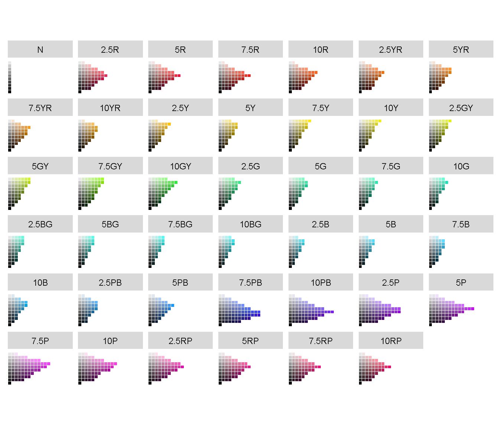
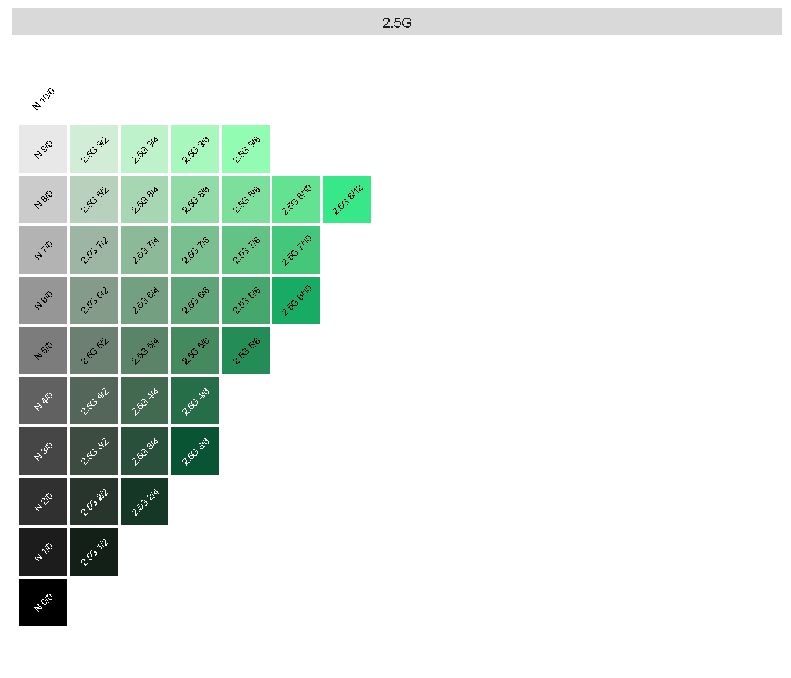
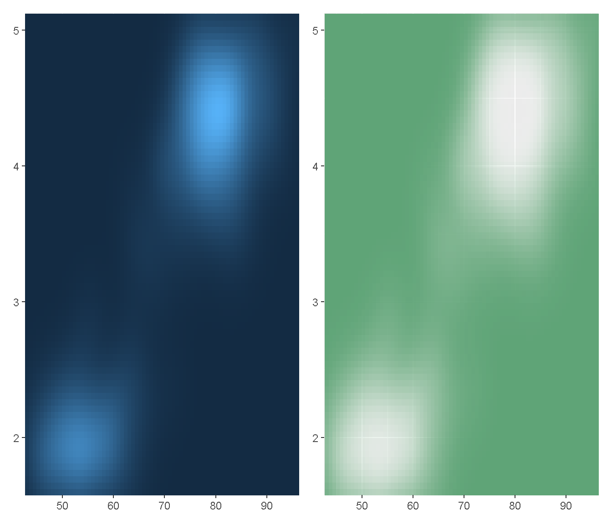
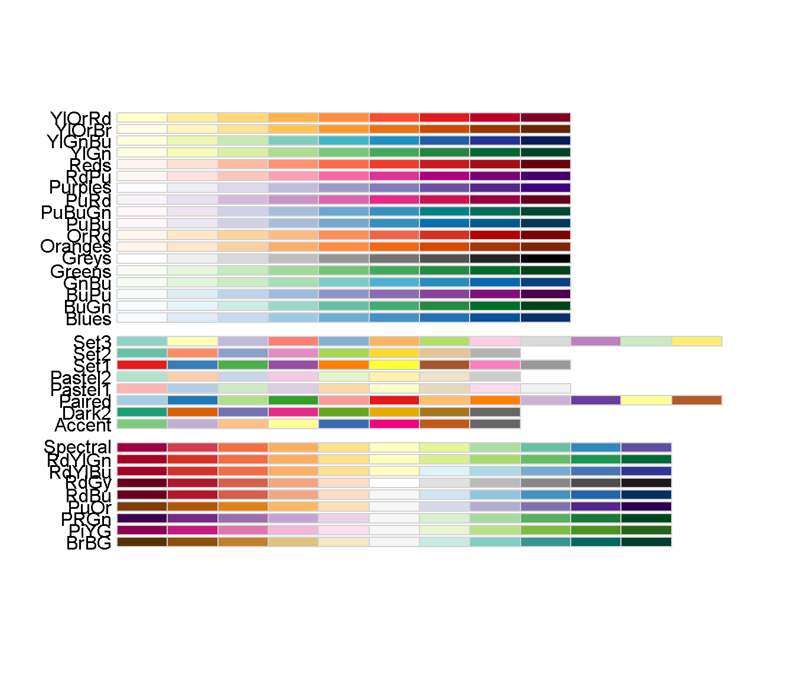
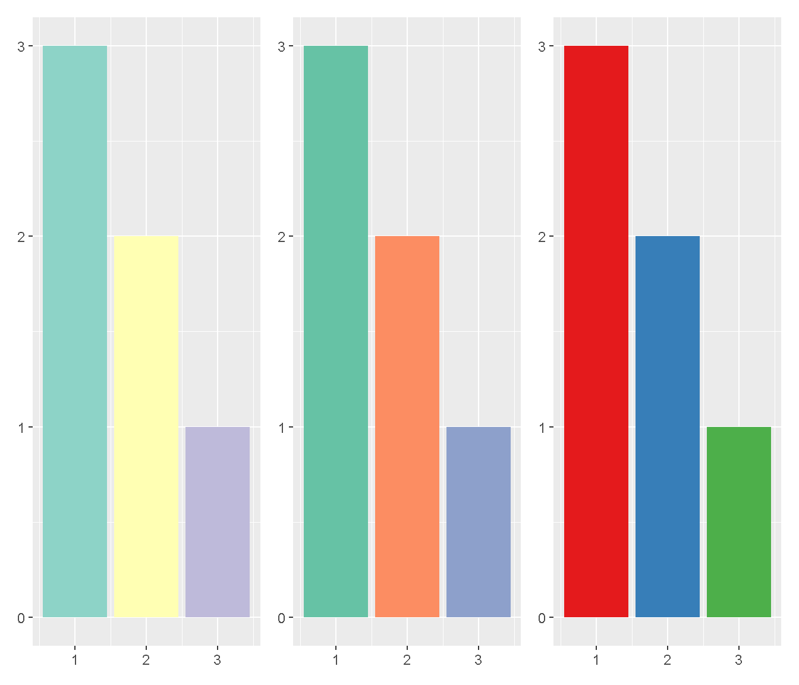
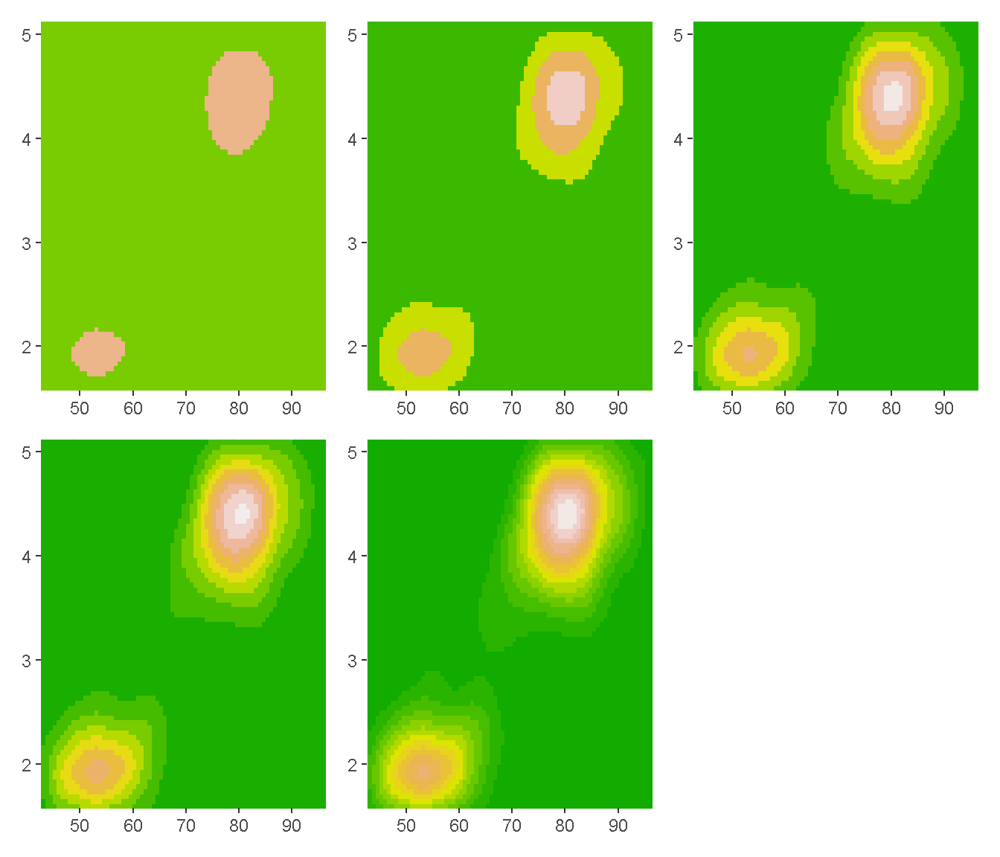

色の調整
Page content
今回は、備忘録的に色の調整の仕方について、記録しておこうと思います。
環境
version## _
## platform x86_64-w64-mingw32
## arch x86_64
## os mingw32
## system x86_64, mingw32
## status
## major 4
## minor 0.3
## year 2020
## month 10
## day 10
## svn rev 79318
## language R
## version.string R version 4.0.3 (2020-10-10)
## nickname Bunny-Wunnies Freak Outパッケージ
Packages <- c("ggplot2", "patchwork", "purrr")
lapply(Packages, library, character.only = TRUE)色を表示させる。
# 色合いを表示させる。
munsell::hue_slice("all")
# 2.5Gを表示
munsell::hue_slice("2.5G")
使ってみる。
erupt <- ggplot(faithfuld, aes(waiting, eruptions, fill = density)) +
geom_raster() +
scale_x_continuous(NULL, expand = c(0, 0)) +
scale_y_continuous(NULL, expand = c(0, 0)) +
theme(legend.position = "none")
erupt +
erupt + scale_fill_gradient(
low = munsell::mnsl("2.5G 6/6"),
high = munsell::mnsl("2.5G 6/12")
)
# パレットを表示せせる
RColorBrewer::display.brewer.all()
これを使ってましょう。
今回は、purrr::map()関数を使って複数の図を書きました。
# データの準備
df <- data.frame(x = 1:3, y = 3:1, z = c(letters[1:3]))
area <- ggplot(df, aes(x, y)) +
geom_bar(aes(fill = z), stat = "identity") +
theme(legend.position = "none") +
labs(x = NULL, y = NULL)
Colors <- c("Set3", "Set2", "Set1")
# 複数の色合い同時に表示させる
Areas <-
purrr::map(.x = Colors, .f = ~{area + scale_fill_brewer(palette = .x)}) %>%
purrr::reduce(`+`)
Areas
もうすこしバリュエーションを増やした図を地形図を使って、表示させてみましょう。
Num <- seq(3, 15, by = 3)
Erupt <-
purrr::map(.x = Num, .f = ~{erupt + scale_fill_stepsn(n.breaks = .x, colours = terrain.colors(12))}) %>%
purrr::reduce(`+`) + plot_layout(byrow = TRUE)
Erupt
最後に、、、
Rは、グラフィックがきれいですね。
あと、複数の色を同時に表示させることができるので、エクセルよりも作業効率がいい気がします。
ではまた！
Adios!!